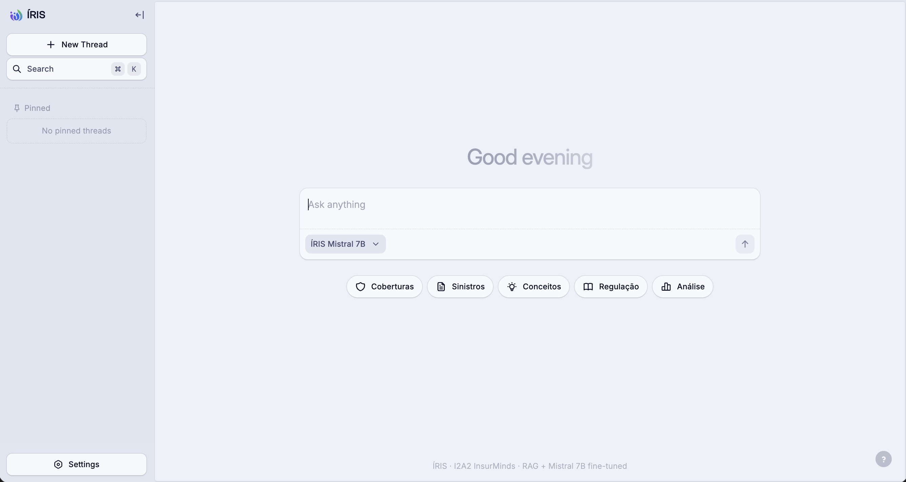
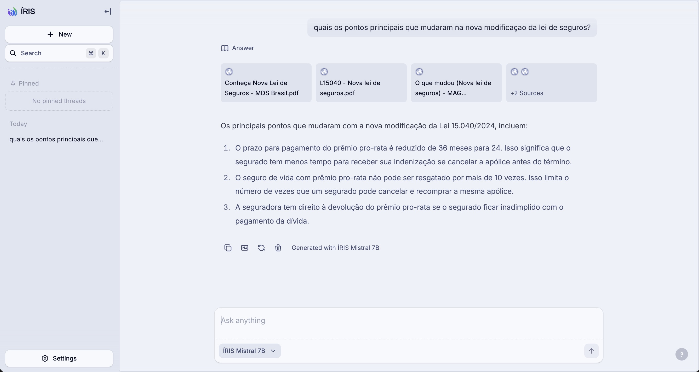

Inteligência em Regulação e Informação Securitária
Mistral-7B-Instruct-v0.3, construímos um pipeline automatizado de geração de dataset a partir de 13 fontes regulatórias (SUSEP, CNJ, STJ, Planalto), extraindo pares pergunta-resposta via Claude Haiku 4.5 com prompt caching. O dataset resultante (211 exemplos de treino, 52 de validação, expandidos para 695 via augmentação 4×) foi usado para treinar adaptadores LoRA com mlx-lm no Apple M4 Pro (17 GB de memória unificada). O modelo fine-tuned foi convertido para GGUF e registrado no Ollama como iris-mistral. A avaliação em benchmark 2×2 revelou resultado contra-intuitivo: o modelo fine-tuned obteve desempenho significativamente inferior ao modelo base (5–10% vs 53% de score médio). Este relatório documenta o processo, os resultados reais e as hipóteses explicativas.
A Lei nº 15.040, de 19 de setembro de 2024, conhecida como Marco Legal do Seguro, representa a mais abrangente reforma do setor securitário brasileiro desde o Decreto-Lei nº 73/1966. Seus 132 artigos reformulam prazos, obrigações, direitos dos segurados e mecanismos de resolução de conflitos, criando um novo arcabouço regulatório que exige conhecimento técnico especializado para ser aplicado corretamente.
Neste contexto, o projeto ÍRIS foi concebido com duplo objetivo:
O experimento foi conduzido sobre o fork do LLMChat.co, uma plataforma open-source de chat com suporte a múltiplos providers de LLM, adaptada para servir o modelo fine-tuned via Ollama.
O pipeline de construção do dataset foi inteiramente automatizado em TypeScript/Bun e executado em 5 etapas sequenciais:
O script scrape-sources.ts buscou 13 fontes autoritativas, extraiu texto limpo (remoção de HTML, entidades, normalização de espaços) e salvou em data/raw/{slug}.md:
| Fonte | Uso | Prioridade |
|---|---|---|
| Lei nº 15.040/2024 — Planalto | FT + RAG | Alta |
| SUSEP — Esclarecimentos nova lei | FT + RAG | Alta |
| SUSEP — FAQ nova lei | FT + RAG | Alta |
| SUSEP — Open Insurance | RAG | Alta |
| SUSEP — Central de Painéis | RAG | Alta |
| SUSEP — Ranking Reclamações 2024 | FT + RAG | Média |
| Ministério da Fazenda — Lei publicada | FT + RAG | Média |
| STJ — Catálogo de Dados Abertos (CKAN) | RAG | Alta |
| STJ — Pesquisa Pronta | FT + RAG | Média |
| CNJ DataJud — API Pública (docs) | RAG | Alta |
| CNJ DataJud — Guia de acesso | RAG | Média |
| CNJ DataJud — Exemplos | RAG | Média |
| PDFs curados (Lei, FAQ ENS, PwC, Fenacor, MAG, SUSEP 2026) | FT + RAG | Alta |
Para jurisprudência, o script scrape-stj-datasets.ts consultou o catálogo CKAN do STJ filtrando por keywords de seguro. Como fallback (catálogo frequentemente indisponível), utilizou 8 precedentes curados manualmente:
| Processo | Tema |
|---|---|
| REsp 1.601.555 | Suicídio — carência de 2 anos |
| Súmula 616/STJ | Agravamento do risco |
| Súmula 620/STJ | Embriaguez e seguro de vida |
| REsp 1.660.164 | Perda total — FIPE na data do sinistro |
| Súmula 229/STJ | Suspensão da prescrição |
| REsp 1.964.543 | Negativa de cobertura — dano moral |
| REsp 2.028.544 | Cláusula de exclusão — interpretação restritiva |
| Súmula 609/STJ | Recusa ilícita = dano moral |
O script extract-web-qa.ts dividiu cada arquivo em chunks de ~3000 caracteres e chamou Claude Haiku 4.5 (claude-haiku-4-5-20251001) com prompt caching para extrair pares JSON. O system prompt foi cacheado para reduzir custos (~90% dos tokens repetidos):
System (cacheado via cache_control ephemeral):
"Você é especialista em direito de seguros e criação de datasets de fine-tuning.
Dado um trecho de texto regulatório ou jurídico brasileiro sobre seguros, gere pares
de pergunta e resposta.
Foco em: obrigações, prazos, definições, direitos, procedimentos, penalidades.
Output: JSON array [{"q": "...", "a": "..."}, ...]"
User por chunk:
"Fonte: {nome} | Texto: {chunk} | Gere exatamente {n} pares pergunta/resposta."O script generate-dataset.ts leu todas as fontes (FAQs curados + web-qa-*.md + STJ) e gerou JSONL no formato MLX chat:
{"messages": [
{"role": "system", "content": "Você é ÍRIS — Inteligência em Regulação..."},
{"role": "user", "content": "Qual o prazo para a seguradora pagar?"},
{"role": "assistant", "content": "Pelo Art. 87, § 1º da Lei 15.040/2024, 30 dias..."}
]}Split determinístico (seed=42): 90% treino / 10% validação.
O script augment-dataset.ts expandiu o dataset com 4 tipos de variações:
| Arquivo | Exemplos |
|---|---|
train.jsonl | 211 |
valid.jsonl | 52 |
train-augmented.jsonl | 695 |
finetune-dataset.jsonl (dataset base sem split) | 264 |
| Componente | Especificação |
|---|---|
| Chip | Apple M4 Pro |
| Memória unificada | 17 GB (GPU + CPU compartilhados) |
| Sistema operacional | macOS 15 |
| Python | 3.11 (via pyenv) |
| mlx / mlx-lm | latest — framework ML nativo Apple Silicon |
| llama.cpp | compilado localmente — conversão HF → GGUF |
| Ollama | latest — serving do modelo quantizado |
| Bun | 1.3.14 — runtime dos scripts de dataset |
O fine-tuning foi executado pelo script finetune.sh em 5 etapas automatizadas:
| Etapa | Ação |
|---|---|
| 1/5 | Verificação de train.jsonl e valid.jsonl |
| 2/5 | Treino LoRA com mlx_lm lora — seleção do melhor checkpoint por val loss |
| 3/5 | Fusão de adapters no modelo base (mlx_lm fuse) |
| 4/5 | Conversão HF → GGUF q8_0 → quantização Q4_K_M |
| 5/5 | Registro no Ollama (ollama create iris-mistral) |
adapter_config.json)| Parâmetro | Valor |
|---|---|
| Modelo base | mistralai/Mistral-7B-Instruct-v0.3 |
| Tipo de fine-tuning | LoRA |
Iterações (iters) | 2000 |
Camadas LoRA (num_layers) | 8 |
| LoRA rank | 8 |
| LoRA scale | 20.0 |
| LoRA dropout | 0.0 |
| Batch size | 2 |
| Learning rate | 5e-6 |
| Otimizador | Adam |
| Max sequence length | 2048 tokens |
| Steps per eval | 100 |
| Save every | 100 iterações |
| Val batches | 5 |
| Checkpoints gerados | 20 (0000100 a 0002000) |
Bug conhecido: convert_hf_to_gguf.py não aceita quantização Q4_K_M diretamente. Fluxo necessário:
# Passo 1: HF → q8_0 GGUF (~7.7 GB)
python llama.cpp/convert_hf_to_gguf.py iris-mistral-fused/ \
--outfile iris-mistral-q8_0.gguf --outtype q8_0
# Passo 2: q8_0 → Q4_K_M (~4 GB)
# --allow-requantize obrigatório (origem não é f16)
llama.cpp/build/bin/llama-quantize --allow-requantize \
iris-mistral-q8_0.gguf iris-mistral.gguf Q4_K_Mllama-quantize não estava compilado. O modelo foi registrado no Ollama em formato q8_0 (7.7 GB). Funciona normalmente para inferência, apenas ocupa mais espaço em disco que Q4_K_M (~4 GB).
Dois protocolos de avaliação foram usados:
Script benchmark.ts — 4 condições avaliadas sobre 5 perguntas com gabarito por critérios obrigatórios. Score = fração de critérios presentes na resposta (threshold 0.3 para aprovação).
Script eval-model.ts — avalia o modelo contra o dataset de validação usando keyword overlap normalizado (remoção de stopwords) entre resposta do modelo e resposta esperada.
Benchmark realizado em 2026-05-29. Cada pergunta avaliada por critérios independentes.
| Condição | Modelo | RAG | Q1 | Q2 | Q3 | Q4 | Q5 | Score Médio | Aprovação |
|---|---|---|---|---|---|---|---|---|---|
| A — base sem RAG | mistral:7b-instruct |
❌ | 75% | 80% | 25% | 25% | 60% | 53% | 3/5 (60%) |
| B — base com RAG | mistral:7b-instruct |
✅ | 75% | 60% | 0% | 0% | 0% | 27% | 2/5 (40%) |
| C — ÍRIS sem RAG | iris-mistral |
❌ | 0% | 0% | 0% | 25% | 0% | 5% | 0/5 (0%) |
| D — ÍRIS com RAG | iris-mistral |
✅ | 0% | 0% | 50% | 0% | 0% | 10% | 1/5 (20%) |
A — Mistral base sem RAG (53%)
B — Mistral base com RAG (27%)
C — ÍRIS Mistral sem RAG (5%)
D — ÍRIS Mistral com RAG (10%)
Avaliação realizada em 2026-05-24. Métrica: keyword overlap normalizado (stopwords removidas), threshold 0.3.
| Modelo | Total Perguntas | Aprovadas | Reprovadas | Acurácia | Score Médio |
|---|---|---|---|---|---|
mistral:7b-instruct | 20 | 6 | 14 | 30% | 26.33% |
iris-mistral | 20 | 4 | 16 | 20% | 18.87% |
iris-mistral) apresentou desempenho inferior ao modelo base (mistral:7b-instruct). No benchmark 2×2, a diferença é de 53% vs 5% (sem RAG). Na avaliação estendida, 30% vs 20% de acurácia.
H1 — Dataset insuficiente (hipótese principal): 211 exemplos de treino ficam abaixo do limiar recomendado para LoRA em modelos 7B sem catastrophic forgetting. Com poucos exemplos, o modelo tende a "esquecer" capacidades gerais de linguagem ao sobrescrever pesos com padrões muito específicos. A literatura de PEFT (Parameter-Efficient Fine-Tuning) sugere mínimo de 500–1000 exemplos para estabilidade.
H2 — Overfitting precoce: Mesmo com seleção do checkpoint de menor val loss, com 211 exemplos o overfitting pode ocorrer muito antes das 2000 iterações. O gap entre train loss e val loss provavelmente é alto desde o início do treino.
H3 — Formato do dataset: Pares Q&A extraídos por LLM tendem a ser verbosos e em registro formal. O Mistral 7B Instruct é sensível ao template <|im_start|>user ... <|im_end|>. Dados mal alinhados ao template de instrução podem corromper o comportamento de seguir instruções.
H4 — Métrica inadequada: Keyword overlap não captura qualidade semântica. O modelo fine-tuned pode estar respondendo corretamente em substância, mas com vocabulário diferente do gabarito — o que a métrica penaliza injustamente. Uma avaliação por embedding similarity ou avaliação humana poderia revelar resultado diferente.
H5 — Modelo base já conhecia a lei: O resultado de 53% do modelo base sem RAG refuta a hipótese de que "o modelo não tem conhecimento sobre a Lei 15.040/2024". O Mistral 7B Instruct foi treinado com dados até 2023/2024 e parece ter adquirido conhecimento razoável sobre direito de seguros. A margem de melhoria real era menor do que assumido inicialmente.
A condição B (Mistral base com RAG) obteve 27%, abaixo dos 53% sem RAG. O prompt de RAG buildPrompt adiciona contexto extenso (chunks recuperados) que dilui a pergunta original. O modelo base não foi otimizado para raciocinar sobre retrieval context longo em português, o que pode causar atenção dividida.
Interessantemente, a condição D (ÍRIS com RAG) obteve 10%, ligeiramente acima dos 5% sem RAG (C), sugerindo que o fine-tuning criou alguma sensibilidade ao contexto externo — mas a base comprometida anula o benefício.
Durante a avaliação estendida (eval-model.ts), foram observados comportamentos anômalos do modelo fine-tuned:
Esses comportamentos são consistentes com catastrophic forgetting parcial — o modelo perdeu capacidade de seguir instruções de forma coerente.
O projeto ÍRIS demonstrou que é tecnicamente viável conduzir um pipeline completo de fine-tuning local — da coleta de dados à publicação do modelo — em hardware de consumo (Apple M4 Pro 17GB) sem custos de infraestrutura em nuvem. O processo técnico funcionou de ponta a ponta: 20 checkpoints LoRA gerados, fusão bem-sucedida, modelo registrado no Ollama e publicado.
Contudo, o experimento revelou que dataset pequeno é o gargalo crítico: 211 exemplos de treino foram insuficientes para superar um modelo de propósito geral. O modelo base (mistral:7b-instruct) sem qualquer adaptação obteve 53% no benchmark, enquanto o fine-tuned obteve apenas 5–10%.
Os aprendizados práticos são valiosos: o pipeline de scraping + extração Q&A via Claude Haiku + augmentação 4× é eficiente e escalável. Com 2000+ exemplos de treino (o pipeline já suporta isso via build-full-dataset), é razoável esperar resultados diferentes. A ferramenta DataJud para RAG em tempo real é um diferencial funcional independente dos resultados de fine-tuning.
Para trabalhos futuros, recomenda-se: (1) aumentar o dataset para 2000+ pares; (2) usar o modelo base não-instruct para fine-tuning; (3) adotar métricas semânticas de avaliação; (4) comparar com modelos menores (3B), que podem generalizar melhor com datasets pequenos.


| Artefato | Localização | Descrição |
|---|---|---|
| Adapters LoRA | docs/data/adapters/ | 20 checkpoints (100 a 2000 iters) + adapter_config.json |
| Modelo fundido | docs/data/iris-mistral-fused/ | Pesos HuggingFace com adapters mesclados (3 safetensors) |
| GGUF q8_0 | docs/data/iris-mistral-q8_0.gguf | 7.7 GB — formato Ollama |
| Dataset treino | docs/data/train.jsonl | 211 exemplos MLX chat |
| Dataset validação | docs/data/valid.jsonl | 52 exemplos MLX chat |
| Dataset augmentado | docs/data/train-augmented.jsonl | 695 exemplos (4× augmentação) |
| Resultados benchmark | docs/data/benchmark-results.json | JSON completo com scores por condição e pergunta |
| Eval iris-mistral | docs/data/eval-iris-mistral-*.json | 20 perguntas, passed=4, accuracy=20% |
| Eval mistral base | docs/data/eval-mistral-7b-instruct-*.json | 20 perguntas, passed=6, accuracy=30% |
| Modelfile Ollama | docs/data/Modelfile | Configuração de temperatura, stop tokens, system prompt |
e0f0a2c23d03 · Tamanho: 7.7 GB (q8_0) · Registrado em: 29/05/2026
# Para reproduzir em outra máquina:
ollama pull karudesune/iris-mistral-7b-instruct
ollama run iris-mistral "Qual o prazo para pagamento de sinistro na Lei 15.040/2024?"
ÍRIS — Inteligência em Regulação e Informação Securitária · I2A2 InsurMinds 2026
github.com/pav-azos/iris · MIT License